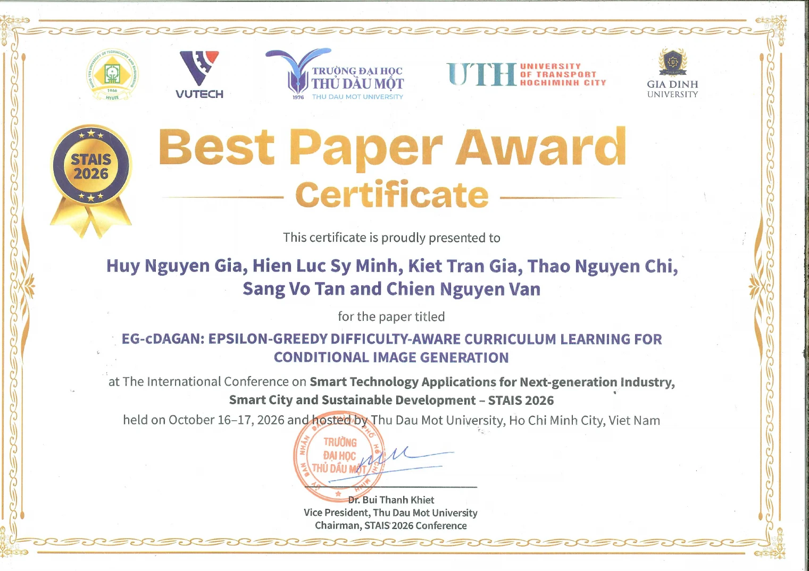
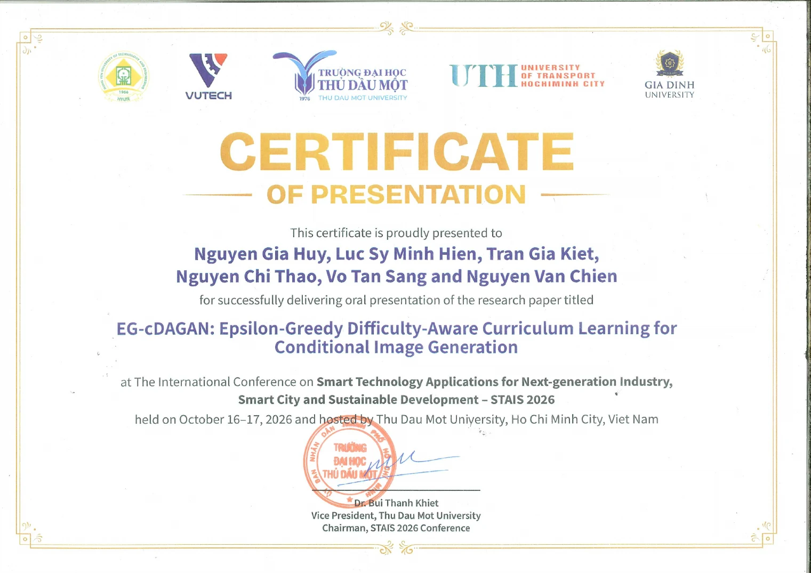
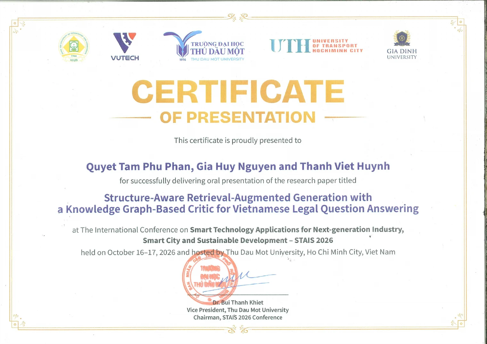
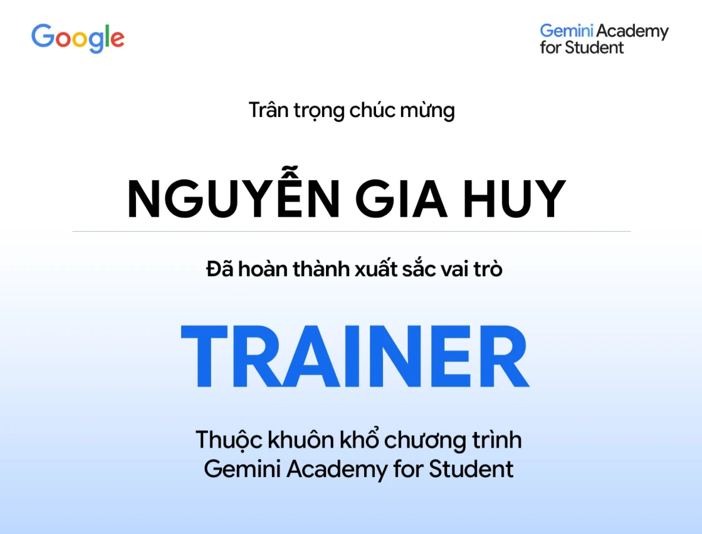
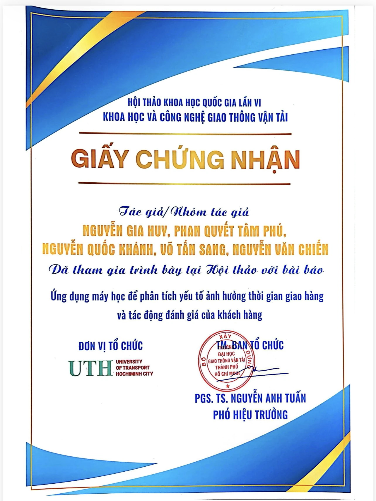
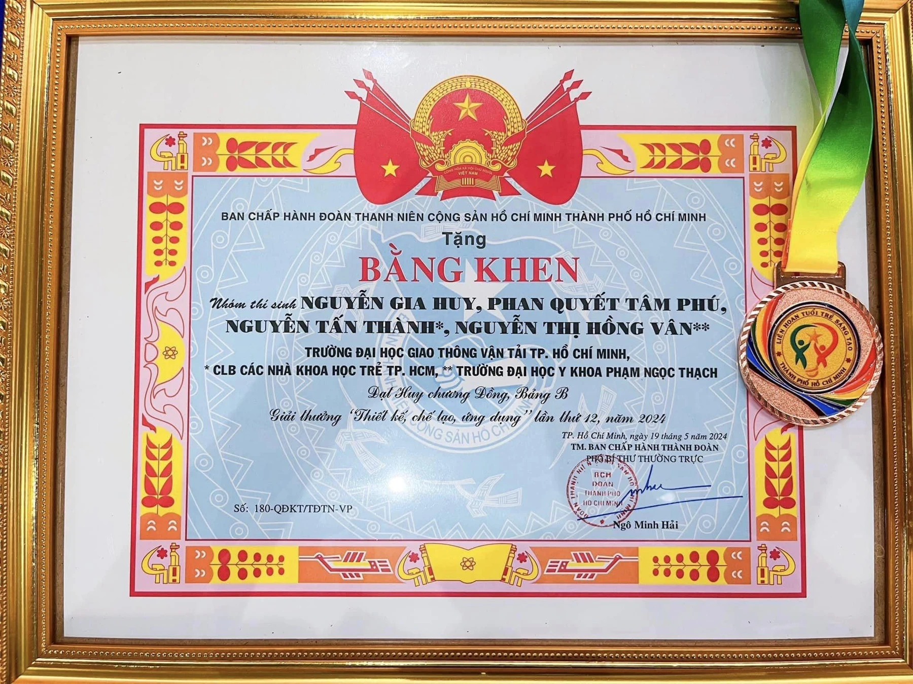
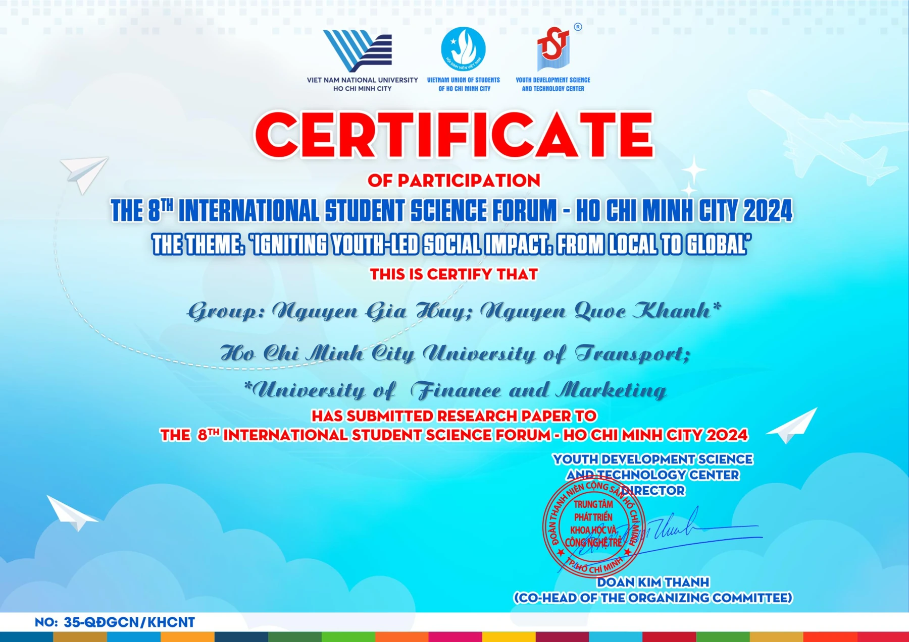
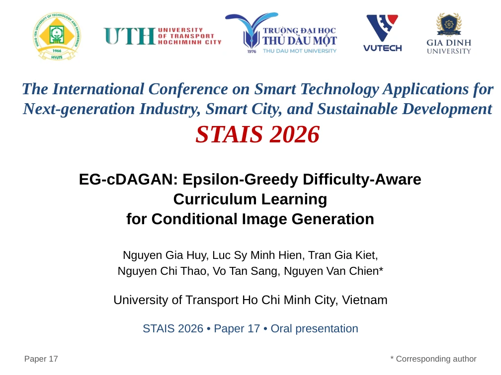
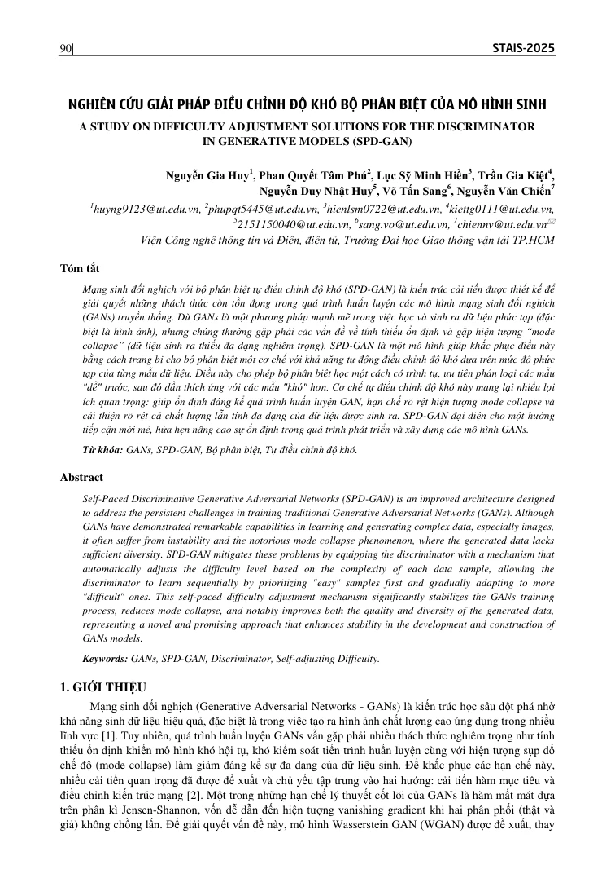

16–17/10/2026
STAIS 2026 · Best Paper Award
Chứng nhận giải Best Paper cho nhóm tác giả EG-cDAGAN. Nguyễn Gia Huy là tác giả đầu.
Xem ảnh đầy đủ2024 — 2026
Từ nghiên cứu mô hình sinh ảnh và RAG đến chia sẻ kiến thức AI với cộng đồng. Đây là những công trình, chứng nhận và kỷ niệm trên hành trình ấy.

Best Paper Award · STAIS 2026
Chọn một ảnh để xem rõ hơn.
16–17/10/2026
Chứng nhận giải Best Paper cho nhóm tác giả EG-cDAGAN. Nguyễn Gia Huy là tác giả đầu.
Xem ảnh đầy đủ
STAIS 2026
Chứng nhận báo cáo nghiên cứu về curriculum learning cho mô hình sinh ảnh có điều kiện.
Xem ảnh đầy đủ
STAIS 2026
Đồng tác giả nghiên cứu RAG có xét cấu trúc và tác tử phản biện dựa trên đồ thị tri thức.
Xem ảnh đầy đủ
Chứng nhận hoàn thành xuất sắc vai trò Trainer trong chương trình.
Xem ảnh đầy đủ
2025
Chứng nhận trình bày bài báo về thời gian giao hàng và tác động đánh giá khách hàng.
Xem ảnh đầy đủ
2024
Bằng khen nhóm thí sinh đạt Huy chương Đồng, Bảng B, giải thưởng lần thứ 12 của Thành Đoàn TP.HCM.
Xem ảnh đầy đủ
ISSF 2024
Chứng nhận tham gia gửi bài nghiên cứu tại Diễn đàn Khoa học Sinh viên Quốc tế lần thứ 8.
Xem ảnh đầy đủ2026
Ảnh đại sứ sinh viên Google trong các hoạt động cộng đồng công nghệ.
Xem ảnh đầy đủCác nghiên cứu tiêu biểu giai đoạn 2025–2026.

STAIS 2026 · Best Paper Award
Tác giả đầu
Slide thuyết trình · 21 trang
STAIS 2026 · Oral presentation
Đồng tác giả
Slide thuyết trình · 20 trang
STAIS 2025 · pp. 90–99
Tác giả đầu
Đọc bài báo trong kỷ yếuCTST 2025 · ISBN 978-604-76-3107-0
Tác giả đầu
Xem chứng nhận báo cáo